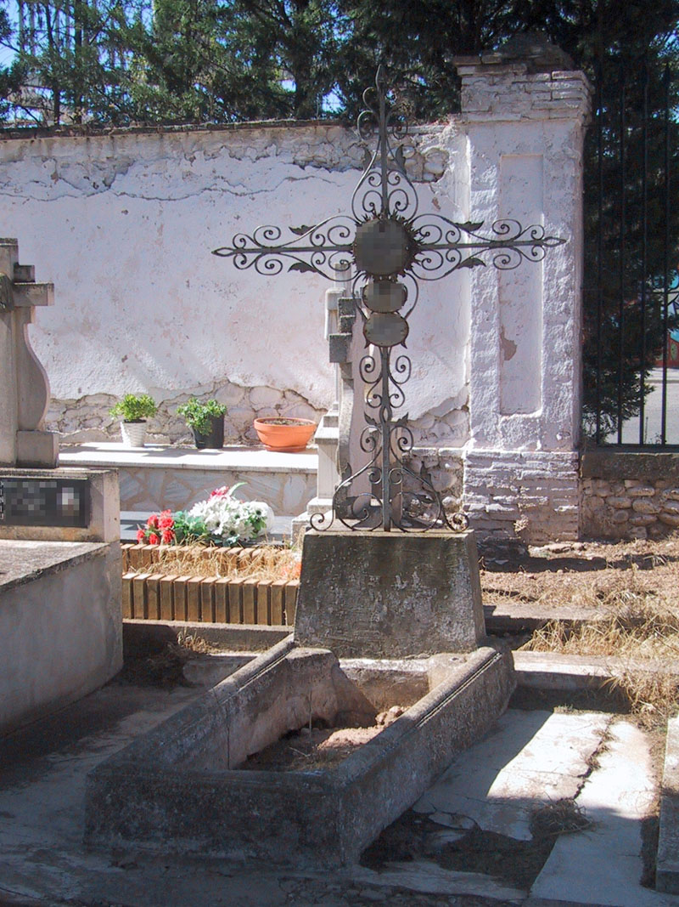
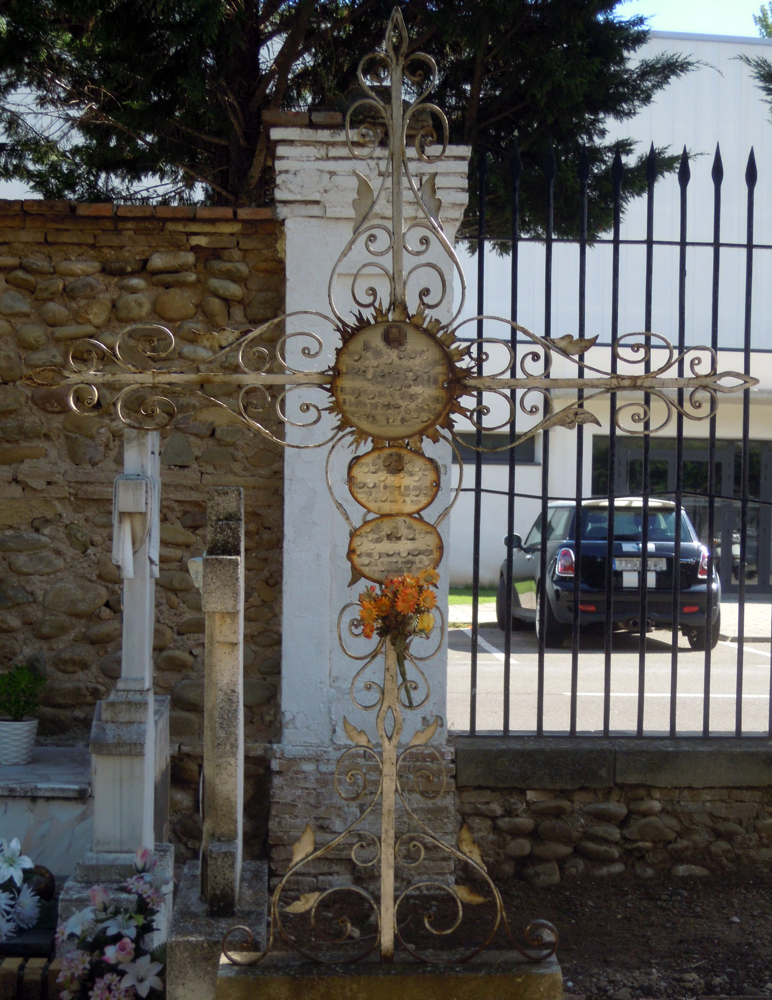

Nos encontramos ante un enterramiento de gran simplicidad, una sencilla sepultura de suelo que carece incluso de losa de cierre sobre ese perímetro marcado con cemento corrido. La cabecera es igualmente sencilla aunque de gran interés y calidad notable, compuesta por un pedestal trapezoidal de piedra y una cruz latina de hierro forjado de grandes dimensiones.

Este tipo de cruces ejemplifica el nuevo modo de trabajar el hierro desde la segunda mitad del siglo XIX. Si hasta entonces el herrero trabajaba el material a martillo, encontramos ahora una fórmula de trabajo semi-industrial que consiste en realizar las piezas decorativas en cinta de hierro curvada a base de moldes, produciéndose piezas sueltas como volutas (piezas curvadas a modo de espirales), segmentos curvilíneos de extremos en ocasiones avolutados y tornapuntas (piezas en forma de “S”). Por medio de clavos, remaches o soldadura, estos elementos eran fijados a los ejes de forma simétrica, generando corazones en ocasiones estilizados, lágrimas, rombos y triángulos. También podían colocarse sucesivas tornapuntas manteniendo una parte en común, o colocarse varias filas de volutas. De esta forma podían realizarse paneles completos de rejas u otro tipo de objetos, como cruces de cementerio.
El caso que nos ocupa es una cruz lanceolada de extremos huecos, con ejes formados por barras de sección cuadrada. Sobre este esquema básico, los brazos están decorados con volutas y tornapuntas simétricas formando corazones avolutados. A ello se añaden pequeñas hojitas de chapa recortada. En el centro se encuentra un círculo macizo del que parten pequeños rayitos de chapa metálica. Los cuatro brazos son iguales, con la única diferencia de que al inferior se ha añadido un gran corazón avolutado en la base. Actualmente aparece pintada en color plata.

El camposanto calagurritano conserva un interesante grupo de cruces de forja compuesto por 40 ejemplares, que reviste especial importancia por carecer de comparación en cementerios riojanos próximos, donde este tipo de cruces está ausente o su presencia es esporádica. Estas cruces no se pueden adscribir a ningún estilo artístico concreto ni trazar una evolución de las formas ya que son muy similares entre sí y carecemos de una cronología fiable para ellas.